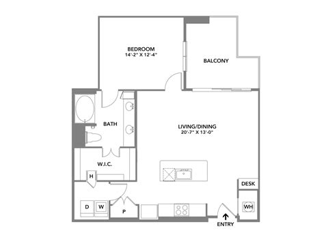

Soteria
Checking if you're protected...
View local map...
Floormap is recommended if you are nearby or familiar with the building. If not, it is highly encouraged to use a local map of the surrounding area.
